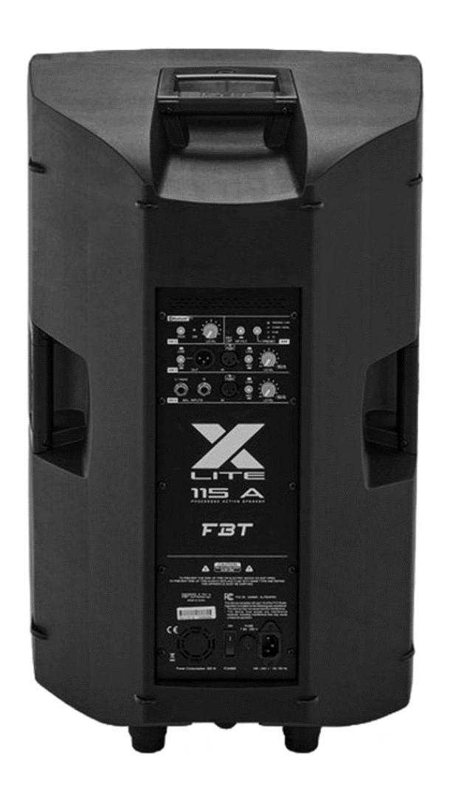

Professional repair service for FBT active loudspeakers, powered speakers and PA systems throughout the UK.
At Britfix Repairs, we specialise in component-level repairs for FBT active loudspeakers. We repair amplifier modules, switch-mode power supplies, DSP boards, protection circuits and damaged audio stages without replacing expensive amplifier modules where possible.
We repair most FBT active loudspeakers at component level, helping customers avoid the cost of replacing complete amplifier modules.